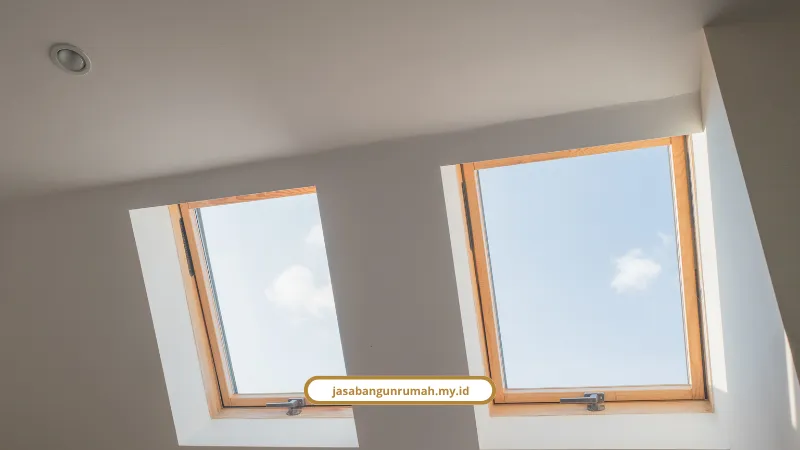

Daftar Isi
- Berapa Biaya Bangun Dapur Sederhana di Lahan 1,5 x 4,5 Meter?
- Berapa Biaya Dapur Permanen dengan Ruang Cuci dan Jemur?
- Bata Merah atau Hebel, Mana Lebih Murah?
- Berapa Harga Meja Dapur Cor dan Atap Belakang?
- Berapa Upah Tukang Bangunan Tahun 2026?
- Bolehkah Membangun Dapur di Sisa Lahan Belakang Rumah Subsidi?
- Bagaimana Jasa Bangun Rumah Menghitung Dapur Rumah Subsidi Anda?
- FAQ
Biaya renovasi rumah subsidi untuk dapur belakang sederhana sekitar Rp10,89 juta. Versi permanen dengan ruang cuci dan jemur sekitar Rp35 juta sampai Rp42 juta.
Angka di bawah berasal dari pengerjaan riil rumah tipe 30/60 dan kalkulasi AHSP Permen PUPR No. 8/2023. Semuanya diuraikan per pos, supaya kisaran anggaran Rp10 juta sampai Rp40 juta yang biasa dipegang pemilik rumah subsidi bisa diuji sebelum tukang datang.
Berapa Biaya Bangun Dapur Sederhana di Lahan 1,5 x 4,5 Meter?
Totalnya Rp10.890.500, dikerjakan 2 tukang selama 18 hari kerja atau sekitar 2,5 sampai 3 minggu. Angka ini dari pengerjaan riil pada rumah subsidi tipe 30/60.
Rincian biayanya:
- Material dasar (pasir 3 pikap, bata merah 1.500 pcs, semen, besi 8A/6A, besi hollow, pipa PVC, kalsiboard): Rp3.760.500
- Finishing dan sanitari (keramik lantai dan dinding, keran, kitchen sink): Rp1.430.000
- Pintu besi penghubung dan atap galvalum atau spandek: Rp2.280.000
- Upah 2 tukang selama 18 hari kerja: Rp3.420.000
Iki Dian mendokumentasikan pembangunan dapur 1,5 x 4,5 meter di Jawa Timur. Dapur berawal dari bata ekspos dan berakhir rapi dengan anggaran Rp10,89 juta, dua tukang, dan 18 hari.
Berapa Biaya Dapur Permanen dengan Ruang Cuci dan Jemur?
Dapur permanen di lahan 6 x 4 meter diestimasi Rp35 juta sampai Rp42 juta, rata-rata Rp1.750.000 per m². Hitungan ini mengikuti AHSP Permen PUPR No. 8/2023.
Cakupan pekerjaannya: tembok keliling hebel tinggi 3,5 meter, meja dapur cor L-shape berkeramik plus kitchen sink, relokasi kamar mandi, dan area cuci jemur dengan skylight.
Alokasi biaya per tahap:
- Pondasi dan tanah (galian dan sloof): Rp5.200.000
- Dinding dan pasangan (hebel 6,5 m³, plester, cat waterproof): Rp12.800.000
- Struktur dan atap (ringbalk, baja ringan 18 m², atap skylight): Rp11.500.000
- Finishing dan sanitari (meja cor, keramik, plumbing): Rp12.500.000
Keempat pos ini berjumlah Rp42 juta, yaitu batas atas rentang estimasi.
Esa Kartika, pengguna Lemon8, membangun dapur sisa lahan belakang 3x7 meter dari nol. Instalasi air, listrik, dan ruang laundry membuatnya mengeluarkan Rp15 juta sampai mendekati Rp19 juta.
Selisih dengan hitungan AHSP wajar terjadi, karena lingkup pekerjaan dan cara belanja tiap rumah berbeda.
Tim Estimator Bang Uno menyarankan atap skylight bukaan bening seluas 1x2 meter di dapur belakang. Ruang masak jadi terang alami di siang hari tanpa boros listrik.
Bata Merah atau Hebel, Mana Lebih Murah?
Hebel lebih murah, yaitu Rp100.500 per m² terpasang dibanding bata merah Rp108.000 per m². Selisihnya Rp7.500 per m².
- Bata merah: material Rp56.000 + adukan semen dan pasir tebal 2 sampai 3 cm Rp22.000 + upah tukang Rp30.000 = Rp108.000 per m²
- Hebel: material Rp75.000 + semen instan atau thinbed 3 mm Rp5.500 + upah tukang Rp20.000 = Rp100.500 per m²
Selisih Rp7.500 per m² memang kecil. Keuntungan hebel lebih besar di waktu kerja yang 2 sampai 3 kali lebih cepat dan beban struktur 3 kali lebih ringan, yang ramah bagi pondasi rumah subsidi.

Berapa Harga Meja Dapur Cor dan Atap Belakang?
Meja dapur beton cor berlapis keramik atau granit sekitar Rp833.000 per m², atau Rp1,9 juta sampai Rp2 juta untuk ukuran standar 1,2 x 1,2 meter. Atap belakang berkisar Rp500.000 sampai Rp900.000 per m² tergantung bahan.
- Tinggi ideal meja dapur: 88 sampai 91 cm dari lantai, dengan tulangan besi diameter 8 mm (M8)
- Atap baja ringan + spandek atau transparan: Rp500.000 sampai Rp650.000 per m²
- Atap polycarbonate atau alderon (peredam panas dan bising): Rp750.000 sampai Rp900.000 per m²
Berapa Upah Tukang Bangunan Tahun 2026?
Sistem harian membayar kenek Rp100.000 sampai Rp150.000 per hari dan tukang batu, besi, atau keramik Rp175.000 sampai Rp300.000 per hari. Sistem borongan jasa berkisar Rp200.000 sampai Rp450.000 per m².
Tarif borongan bergantung pada tingkat kerumitan dan volume pengerjaan. Dapur berbentuk L dengan skylight tentu lebih mahal daripada dinding lurus.
Bolehkah Membangun Dapur di Sisa Lahan Belakang Rumah Subsidi?
Boleh menurut Kementerian PUPR, selama mengikuti panduan hukum yang berlaku. Untuk skema KPR FLPP, rumah tidak boleh dirombak total atau diubah struktur fisiknya secara drastis dalam 5 tahun pertama.
Panduan lainnya:
- Fasad depan tetap utuh, tidak diubah ekstrem dan tidak ditambah lantai tanpa izin resmi
- Bangunan tidak dialihfungsikan menjadi tempat usaha komersial dalam jangka waktu tertentu
- Dapur berdiri di atas lahan pribadi, bukan fasilitas sosial atau umum
- Dokumen administratif lengkap: izin RT/RW, rekomendasi pengelola atau developer, dan PBG jika menambah struktur permanen
Batas hukum lengkap bersama paket hemat dan simulasi biayanya dibahas di ulasan renovasi rumah subsidi dari aturan sampai estimasi biaya.
Bagaimana Jasa Bangun Rumah Menghitung Dapur Rumah Subsidi Anda?
Kami menyusun RAB terperinci sejak awal, jadi pemilik rumah subsidi terhindar dari risiko boncos. Studio design & build Jasa Bangun Rumah beroperasi sejak 2010 dan telah menyelesaikan lebih dari 250 proyek.
- RAB transparan: anggaran per pos, tanpa biaya tersembunyi
- Design & build: perancangan arsitektur, material hemat berstandar SNI, dan eksekusi oleh tim bersertifikat
- Garansi struktur: komitmen jadwal pengerjaan yang terstruktur
- Layanan sesuai kebutuhan: jasa renovasi bangunan gedung, jasa kontraktor rumah, dan jasa arsitek untuk dapur yang efisien
Budi Santoso (klien rumah tinggal, Bekasi) bercerita, "Tim selalu memberi kabar perkembangan proyek dan hasilnya jauh melebihi ekspektasi kami." Siti Aminah (klien di Surabaya) menyebut RAB transparan sejak awal membuat tidak ada biaya tak terduga, dan renovasi selesai lebih cepat dari jadwal.
Pesan jadwal konsultasi awal dan hitung estimasi gratis lewat WhatsApp 0889-8964-3555 atau email info@jasabangunrumah.my.id.
Dapur sederhana 1,5 x 4,5 meter berbiaya sekitar Rp10,89 juta, sedangkan dapur permanen plus ruang cuci dan jemur 6 x 4 meter Rp35 juta sampai Rp42 juta. Hebel dan atap yang tepat bisa memangkas waktu dan beban pondasi.
Pastikan lahan berstatus pribadi, fasad depan tidak berubah, dan izin bank serta PBG beres. Kirim ukuran lahan Anda ke tim Jasa Bangun Rumah, dan RAB rinci bisa disusun tanpa biaya konsultasi.